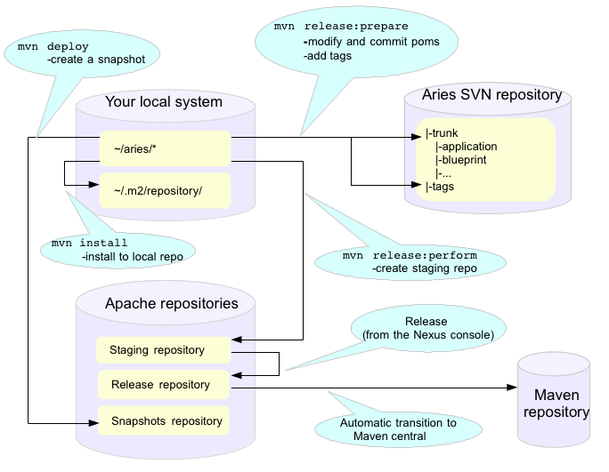

|

|
How to do an Aries ReleaseThere are three types of Aries release:
The outline process is the same in all three cases, further on down this page there are details about how the Apache release process works and how to get set up to run it, read those sections first if this is your first release. If you are already familiar with the Apache process just use the high level descriptions in the next few paragraphs to perform releases. Releasing a single bundle or group of bundles.What to release? Make a listThe Apache release process will not release any bundle that has dependencies on -SNAPSHOTS. If, for example, a release of the blueprint API bundle is required the first step is to find and release any of its -SNAPSHOT dependencies. Because Aries bundles are quite interdependent (see here for an idea of how the modules relate to each other, it may be necessary to release quite a large number of bundles. So, step one is to make a list. To help with this, there is a file called aries_release_versions.txt in the top level aries directory - this contains a list of all the Aries modules and their current release versions. The file can be recreated (if necessary) using the perl script list_bundles_in_aries.pl, checked into SVN under the scripts directory. The text file is used for later steps in the release process, so by the end of the process it will have been updated to have a complete list of all Aries modules and their most recent version numbers after the release. How to deal with JIRABefore actually doing any releasing work through the list of bundles and understand what defects have been fixed (add more about JIRA versions here) What version will be released?For each bundle on the list check how its package versions have changed since the last release. Based on this, use the versioning policy to determine the version of the bundle that should be released. Releasing bundlesFor each bundle:
Complete the processOnce the bundles are in the staging repository, start a vote on the release. After 72 hours close the vote. To complete the release process it is necessary to copy the new bundles to the dist dir and update table on the web pages. Releasing a distributionA distribution is just a collection of Aries bundles which have already been released. The distribution is just a convenient way for consumers to download aries bundles and all of the Aries bundles that they depend on. There are three distributions:
The release process is just the same as for everything else, again, the right time to release these is immediately after a bundle(s) release when you have a collection of artifacts that work together. Releasing the samplesThe Aries samples are designed to work across all the Aries modules. Samples are released as a single module. All of the Aries dependencies are listed in the top level samples pom. In trunk, the version of all the dependencies should always point the SNAPSHOT versions in trunk. At release time these must all be modified to the latest released version of each bundle. It is very important the versions are set only in the top level sample pom. Both sub-modules and filtered resources need the version information, setting it in one place is the only way to avoid a mess. The best time to do a samples release is usually at the end of a bundle release when all of the bundle version information is up to date in aries_release_versions.txt. It is critically important that the samples are all tested before making release. Some have itests but others (blueprint) are only tested manually. In fact it's wise to run through a quick manual check for the blog and aries trader samples as the itests do not catch everything. Background information on the Apache Release processTo create a release you will need to create the release artifacts and move then to various places (ultimately the Maven central repository). The Maven commands and general outline of the process looks like this:  The full maven commands are not shown - the intention is just to give an indication of which maven commands you will need to use to create release artifacts in different places. Performing a release is described in detail here . This document It covers all the steps listed above so on these pages we will only add things which are specific to the Apache Aries release. There are a few steps to the process:
The best current documentation for releases is here. It covers all the steps listed above so on these pages we will only add things which are specific to the Apache Aries release. Discussion of the release and its content on the Aries mailing listBefore starting off the release process it is essential to gain consensus on the dev@aries list that this is the right time for a release and to agree its content. Allow at least a week for this discussion. Creating and storing GPG keysFor Aries your GPG key will need to be in this file: https://svn.apache.org/repos/asf/aries/KEYS (follow the instructions in the file) and checkin Setting up your environmentFollow the general instructions linked to above. Creating a branch to release fromIt is strongly recomended that releases are made from trunk and NEVER from a branch. But, if you have to release from a branch this is what you will need to do: svn copy https://svn.apache.org/repos/asf/aries/trunk \ https://svn.apache.org/repos/asf/aries/branches/0.X-RCx \ -m "Creating a release branch of /aries/trunk." Where '0.X' is the number of the release. Checkout the new branch, for example, for the 0.2-incubating release: svn co https://svn.apache.org/repos/asf/aries/branches/0.2-RCx aries-0.2-candidate IMPORTANT If you are using a branch to release you must edit the pom.xml for each bundle to change the SCM references to point to the branch and not to trunk. For example: <connection>scm:svn:http://svn.apache.org/repos/asf/aries/branches/0.2-RCx/parent</connection> <developerConnection>scm:svn:https://svn.apache.org/repos/asf/aries/branches/0.2-RCx/parent</developerConnection> <url>scm:svn:http://svn.apache.org/repos/asf/aries/branches/0.2-RCx/parent</url> The consequence of forgetting this is that the commands that create the release (mvn release:prepare, mvn release:perform) will declare SUCCESS but will not create a staging repository and will add stuff to the snapshot repository :-/. After taking the branch, change the pom versions in trunk to, say, 0.3-incubating or whatever you want to call the next development version. Checking which version of the bundle to releaseIf the Maven version of the bundle ends -SNAPSHOT then some change has been made which may require a release. To get a summary of the changes, use svn to compare with the most recently released tag, for example: svn diff https://svn.apache.org/repos/asf/aries/tags/testsupport-0.3/ https://svn.apache.org/repos/asf/aries/trunk/testsupport/ --summarize In general, if no Java files have changed only the micro version of the bundle will need to be incremented on release. If Java code has changed it is important to check the packageinfo files to see whether package versions have changed. If so these might lead to the requirement to increment the major or minor versions the bundle. Checking release artifactsDelete everything under ...org/apache/aries in your local Maven repo. For linux/Mac users you will find this under ~/.m2/repository/. Check that the code builds using the usual sequence of commands, but add the following arguments to the 'mvn install' command: mvn install -Papache-release -DcreateChecksum=true This should build and install release artifacts in your local repo. Check the 0.1 release to understand what files should be created. To perform legal checks, in each subproject, run: mvn rat:check -fn This will run through the project and its sub projects generating a file called rat.txt in each target directory. The 'fn' means it will carry on even if it find a failure. To inspect the failures, use: find . -name rat.txt | xargs grep \!\?\? This will pick out the failing file names. Some of the files that rat fails do not require an Apache license, eg MANIFEST.MF, but any .java or .js file does need one. As an alternative you can use 'mvn -Prat install'. Creating a snapshot releaseThis is important to do when releasing from trunk as other bundles may want to continue to depend on the -SNAPSHOT version while the release is voted through. mvn deploy (check exact format) JIRA preparation
Creating the releaseCreating the release artifacts in a staging repositoryThe release is created by releasing each bundle separately and in a specific order. It is also desirable to maintain the same IP address for the entire process (the staging repository is associated with your IP address, changing it results in the creation of a second staging repository). Short summary: Use a wired ether net connection and allow about 4 hours for the next few steps. From the top level directory in your branch run: mvn clean Note The prepare step will make some assumptions about the version of the development stream that is left after the release has been made. When releasing from a branch it may not be a good idea to accept the default for this, it will very likely conflict with the development version in use in trunk. For each bundle that needs to be release perform the following commands: Check that there are no depndencies on -SNAPSHOT versions. Ensure that everything is committed in SVN mvn release:prepare -Papache-release -DpreparationGoals="clean install" mvn release:perform -Papache-release
This will put release artifacts into an Apache staging repository . You will need to log in to see it. If nothing appears in a staging repo you should stop here and work out why. If you have made a mistake it's quite easy to revert. The release commands make and commit changes to the project's pom.xml files and they create a tag in SVN. To revert the changes you will need to revert the pom.xml files and delete the tag from svn. If you are in Europe the mvn release:prepare command almost always fails at the last step, with a message like: [ERROR] BUILD FAILURE [INFO] ------------------------------------------------------------------------ [INFO] Unable to tag SCM Provider message: The svn tag command failed. Command output: svn: No such revision 936951 This is due to the SVN mirroring in place between Europe and the master in the US. When you make a commit, it isn't immediately available in Europe to svn up to. Just wait 10 secs and repeat the mvn release:prepare command for it to restart where it left off. Closing the staging repositoryAfter checking that the staging repository contains the artifacts that you expect you should close the staging repository. This will make it available so that people can check the release. Running the vote.At this point you should write two notes to the dev@aries.apache.org mailing list.
The the source archive files should be explicitly called out by release manager in any release vote. From an Apache legal standpoint, this is what the project is "releasing" and what the community should be voting on. In this sample note , there is a link to each modules' source*.zip file.
The content should just indicate that the note starts a thread to discuss the Aries release. After 72 hours, if no problems have been found in the release artifacts, the dev@aries vote can be summarised and closed. Note that at least three +1 votes from Aries PMC members are required. Finally - ensure that the file aries_release_version.txt is completely up to date and accurate. You will use this file in the following steps to help build the release web pages. Promoting the release artifactsFrom the Nexus pages , select the staging repository and select 'release' from the top menu. This moves the release artifacts into an Apache releases repository, from there they will be automatically moved to the Maven repository. Making the release artifacts available from the Aries web pages.Anything that is to be downloaded must be put in /www/www.apache.org/dist/aries on minotaur. Don't forget to changes the file permissions to '664' so that other members of the group can access them. The distributions are archived here /www/archive.apache.org/dist/aries. First, delete the previous distribution from the distribution directory. Download the release artifacts This is best done using a script, the script can be generated uing the perl script download_release_artifacts.pl. Next, update the Aries Downloads pages to refer to the new artifacts. Tidying up tasks
What to do when people find problems with the release
|